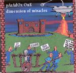

| Artist: | pArAdOx OnE |
| Title: | Dimension Of Miracles |
| Label: | Neurosis |
| Length(s): | 58 minutes |
| Year(s) of release: | 2002 |
| Month of review: | [07/2002] |
| 1) | Dimension Of Miracles - Entering The Dimension | 3.50 |
| 2) | Dimension Of Miracles - Dimension Of Miracles | 2.08 |
| 3) | Dimension Of Miracles - The Carmodic Personality | 2.11 |
| 4) | From The Void | 6.30 |
| 5) | Tragic Realm - I Have No Mouth But I Must Scream | 1.55 |
| 6) | Tragic Realm - Majesty | 2.25 |
| 7) | Tragic Realm - Tragic Realm | 4.41 |
| 8) | Alien Harvest | 5.54 |
| 9) | Big Brother | 4.23 |
| 10) | The Road To Osiris | 9.16 |
| 11) | Quater's Mass - An Inheritance Of Dormant Faculties | 2.06 |
| 12) | Quater's Mass - Imps And Demons | 4.53 |
| 13) | Return Of The Godz | 2.57 |
| 14) | Quater's Mass Final Movement | 3.56 |
| 15) | Spaceship In The Sky | 1.05 |
From The Void has a bit of a seventies feel, with on the one hand sounds as you would expect from electronic retros Air and sequencing as we heard from Klaus Schulze on the other. Towards the end a rather fuzzy guitar and Emerson like keys make this track into a bit of a hodgepodge, all be it a niceish one.
Tragic Realm is another trio track, of which section one I Have No Mouth But I Must Scream is eighties keys with a whispered haunted voice on top, creating a bit of an eerie feel. Like it. Majesty opens with the majestic sound of a church organ (undoubtedly a fake one, but still). A mid track snap introduces some less traditional keys, but still leaving a strong effect. Tragic Realm is a near wall of sound, returning the haunted voice with somewhat chaotic and pushing electronics.
Alien Harvest starts a bit of a standard electronic track, with constricted sounding drumming and a meandering melody. As it progresses the tension builds, making it all the more interesting for that. This track also has a strange snap, after which a completely new track seems to start, which appears to be something of a sound effect experiment.
Big Brother seems more like a Rick Ray track: carried by distorted guitars, Rick's vocals, and lyrics that strongly remind me of Rick's normal writings. Not bad, but I fail to see how this track fits in with the others.
The Road To Osiris starts with to minutes of electronic carpet, to then be, somewhat abruptly, taken over by more bleepy electronics, to slowly once again develop into something more carpetlike.
The Inheritance Of Dormant Faculties (does that lead to a daft punk?) has sort of a Frankenstein conversation on Gary Numan keys, making for a rather nice start to Quater's Mass. Imps And Demons has fuzzy guitars over sketchy keys, which as time progresses give way (by being killed off) to a more thoughtful section.
Return Of The Godz is a pleasant track, without being too striking. Or at least, so it would seem: towards the end chaos suddenly strikes.
Quater's Mass Final Movement doesn't appear to be a part of Quater's Mass, as far as the track list is concerned, although its title might suggest differently. This also is a pretty good electronic track.
Spaceship In The Sky is an acoustic guitar ditty, kinda odd, but not a bad closing.